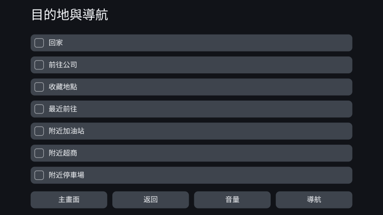
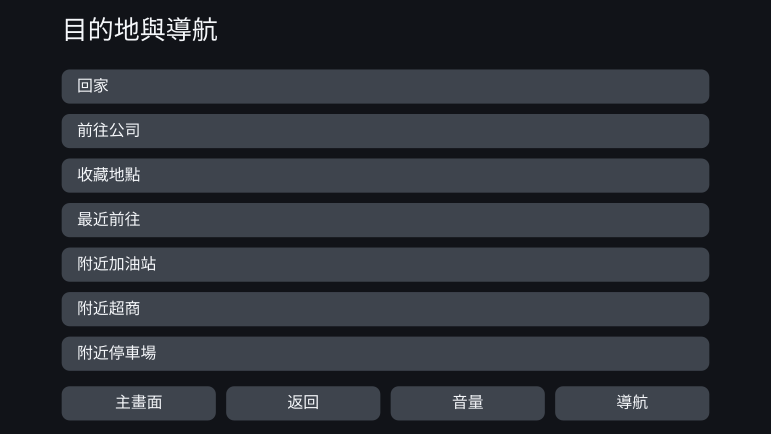

Personal Fit UI - 透過約束型設計進行UI的個別最佳化
2026年8月
概述
所有人都以同樣的方式使用同一套介面。本作品離開這項大量生產的前提，探討能否依照每個人的認知、感官與身體特質來生成介面。
所追求的並不是在使用過程中隨情境不斷變化的介面，而是這樣一種機制：在開始使用的階段掌握此人的特質，並在遵守安全與無障礙相關約束的前提下，預先生成適合他的介面。
在這次探討中，我實踐了自己稱為「約束型設計」的想法。人依據文獻與標準，設計出應當遵循的方向與邊界；AI 在這個框架之內決定具體的數值與用詞，並驗證生成結果是否違反框架。
PoC 以車用導航為題材，為特質各異的十三個人物誌生成了介面。結果是，外觀上幾乎沒有出現明顯變化。另一方面，把約束改寫成可驗證形式的過程，反而讓人看清了個別最佳化的餘地留在哪裡、又在哪裡被約束吃掉。
把同一套介面交給所有人，意味著什麼
如今大多數產品都以大量生產為前提來設計：用一套介面涵蓋盡可能多的人。即使產品可以更改字級或顯示項目的數量，使用者仍得自己找出適合自己的狀態並加以設定。
這種做法對許多人是奏效的。但「適合許多人」與「適合所有人」並不相同。即使產品滿足了共同的設計基準，仍會留下用起來吃力的人。
這個結構同樣出現在車用介面的評估之中。美國 NHTSA 關於行車中視線偏離的驗收程序，並不要求所有受試者都達到基準。合格判定以 24 名受試者中有 21 名達標為條件，也就是把一定比例的人達不到基準這件事，事先寫進了制度裡。此外，汽車製造商提交給主管機關的資料還指出，在多項作業中持續長時間移開視線的人，大約每六人就有一位。要說明的是，這份資料出自受規範的製造商之手，其訴求是放寬基準。本作品所追求的不是放寬基準，而是透過個別化，讓能夠達標的人變多。
個別最佳化介面的意義，並不在於讓所有人的畫面都變得新奇，而在於把統一介面過去漏掉的人，帶進能夠使用、能夠安全操作的範圍。
在此之前，為一個人單獨設計一套介面的成本並不現實。隨著 AI 得以納入設計流程的一部分，這項前提正開始改變。
作為題材的車用導航
本作品的主題不是車用導航，而是個別最佳化的介面。之所以選擇車用導航，是把它當成檢驗其可能性與界限的一個例子。
車用介面帶著強烈的約束：有限的畫面、極短的注視時間、操作的安全性。出廠前，它會以多數人都能使用的統一介面接受驗證；而同一套介面，也會交到那些並不適合這項設計的人手上。
如果在約束如此嚴苛的領域裡，個別最佳化仍能成立，就能具體檢驗約束型設計這個想法。反過來說，也可能因為約束太強，幾乎不留給 AI 任何自由度。這是一個能同時觀察到兩種結果的題材。
在日本，截至 2026 年，支援 OTA 更新的車款與不支援更新的傳統原廠導航仍然並存。此外，即使圖資可以更新，介面的基本結構也未必會在購買之後持續被重新設計。本 PoC 設想的是一種在開始使用之後、介面不會頻繁更新的系統。
把個別最佳化變成可以生成的機制
所謂約束型設計，是先把框架明確定下來，再讓 AI 在框架之內掌握細微差異、靈活地行動。它不同於從既定表格取值的參數化機制——被設計的，是 AI 能夠探索的解的範圍本身。
科學知識並不總能給到具體的數值，有時只指出「放大」「減少資訊」這類方向。數值已經確定的部分，作為規則來計算；只知道方向的部分，則由 AI 在約束允許的範圍內決定具體取值。不讓這項區分變得含混，本身也是機制的一部分。
確定認知面向
不以診斷名稱，而以與介面易用性相關的特質作為軸來定義：工作記憶、對干擾刺激的耐受、視覺與聽覺特質、手指的靈巧度等。
對應表
把使用者的特質與應當調整的介面參數連結起來，並連同依據一併寫明：哪一項特質使什麼、朝哪個方向變化。
科學知識與標準
蒐集安全基準、無障礙標準、認知科學的研究成果，以及通用的介面設計原則。
約束條件群
生成結果必須遵守的條件。不停留在理念層面，而寫成能夠驗證「滿足了還是違反了」的形式。
設計空間
介面可能採取的各種選擇：字級、觸控目標、顯示項目數、資訊層級、通知、用詞、順序、分組等。對應表給出調整的方向，約束條件群則剔除不被允許的解。
AI 在框架之內加以具體化
在剩下的自由度中決定數值、用詞、順序與分組，再透過另一道檢查確認是否符合框架，只輸出滿足全部條件的個別最佳化介面。
PoC：為十三個人物誌生成介面
PoC 準備了十三個特質組合各不相同的人物誌。它們並非對真實使用者分布的重現，而是為了確認哪些特質會讓介面產生變化，刻意配置特質而成的驗證用格點。
對每個人物誌，都把共通的統一介面當作 before，把輸入其特質後生成的介面當作 after，加以對照。
幾乎沒有變化的例子
PS-01 —— 基準（壯年、典型）
這個人物誌在認知、感官與身體特質上都落在典型範圍。個別最佳化之後，文字略微變大，但顯示的項目數、排列方式以及觸控區域的大小幾乎沒有改變。
統一介面（before）

個別最佳化介面（after）

出現可見變化的例子
PS-12 —— 壯年、手指靈巧度較低（感官與認知為典型）
這個人物誌在年齡、感官特質與認知特質上都與 PS-01 相同，只有手指的靈巧度較低。在 after 中，觸控目標變大，一個畫面顯示的項目從七項減為四項。其餘項目被移到下一個畫面，藉此為每一個操作對象確保足夠的尺寸。
統一介面（before）

個別最佳化介面（after）
文獻指出了觸控目標應滿足的下限，也指出了操作精度較低時應當放大的方向，卻沒有唯一地規定「對這個人要加大多少」。正是這個未確定的部分，由 AI 在約束範圍內加以具體化。
PoC 的結果
十三個人物誌中，能夠確認出明顯視覺變化的只有 PS-12。對多數人物誌而言，before 的統一介面本來就夠好用；個別最佳化帶來的好處，至少在從畫面外觀上可以辨認的層面，幾乎沒有顯現出來。
PS-12 雖然把個別化直觀地呈現了出來，但這種程度的更動，用現有產品的顯示設定或無障礙設定也做得到。不必由使用者自己設定，一開始就提供合適的狀態，這本身是有意義的；但還不能說，它創造出了非 AI 不可能提出的新介面。
因此，我沒有把這個結果判定為「由 AI 進行的個別最佳化取得了成功」。
為什麼沒有產生差異
原因在於，滿足約束的設計空間太窄。
車用介面存在大量出於安全考量的下限與上限：文字與觸控目標需要達到一定大小，一個畫面可顯示的資訊量也有上限。把這些逐一施加之後，留給 AI 可選的解就所剩無幾。
AI 具體化的項目，在這樣的規模下大多也屬於人只要決定一次、就能固定成一張小對照表的範圍。這並不表示「AI 是多餘的」——它承擔了填補文獻未給出的具體數值的角色；只是留給它去探索的選項實在太少。
另一方面，用詞的改寫仍留有很大的自由度。但這類差異很難被看成畫面構成上的變化：人能夠認知其價值的領域，與規則寫不盡的領域，並沒有重疊。
成果出現在框架的設計上，而不是介面上
這次 PoC 中最大的成果，並非誕生於生成介面的階段，而是在此之前設計約束的階段。在把標準與文獻改寫成機器可驗證的條件的過程中，框架本身暴露出了若干處不一致。
- 對同一個介面元素，不同標準給出了各自不同的下限。
- 「僅在行駛中適用」這項條件，在規格裡沒有可以寫下的位置。
- 兩條原本各自獨立的設計軸被合併成一條，導致大多數選項都被約束排除掉了。
- 沒有向 AI 充分說明哪條約束支配哪項輸出，以致無關的條件被用於判斷。
- 本該留給 AI 的判斷被固定在實作一側，使約束型設計更接近一個單純的規則引擎。
對於每一處，都是由 AI 發現不一致並指出相應位置，再由人做出判斷，進而修正約束。
也就是說，這次的成果與其說是「AI 做出了新的介面」，不如說在於透過與 AI 的往復，生成介面的框架本身得到了檢驗與更新。在約束型設計中，AI 的角色不只是生成成品，還包括在生成之前，找出規則之間的衝突，以及那些在無意間被抹去的設計可能性。
未來工作 —— 框架要清晰，框架之內要寬
在約束型設計中，對 AI 的期待並不是從表格裡取出既定的數值，而是先用約束排除明顯不適當的生成結果，再從剩下的眾多可能性中，提出在機率上更為妥當的解；或者，提示出人事先不會想到的模式。
這一次，這樣的效果沒有充分顯現。原因不是沒有發生衝突，而是滿足約束的設計空間太窄，以致選擇「更合適的解」或「新的解」幾乎失去了意義。
接下來該問的，不是 AI 是否有效，而是：設計空間要寬到什麼程度，才會產生只有 AI 才帶得來的效果？
在下一次實踐中，我會選擇這樣的題材：既能維持安全性，又能留下多個妥當的解，而且那些用規則寫不盡的差異，人也能夠辨識為價值。框架要明確地定下來，但要在其中留出足以讓 AI 探索的寬度。兩者兼顧，才能讓約束型設計不只是自動化，而成為 AI 時代的一種設計方法。